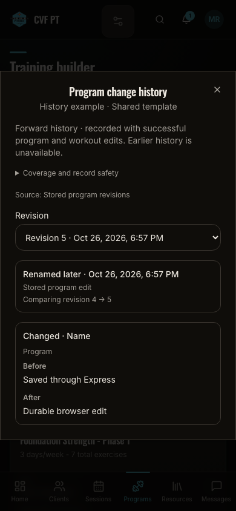
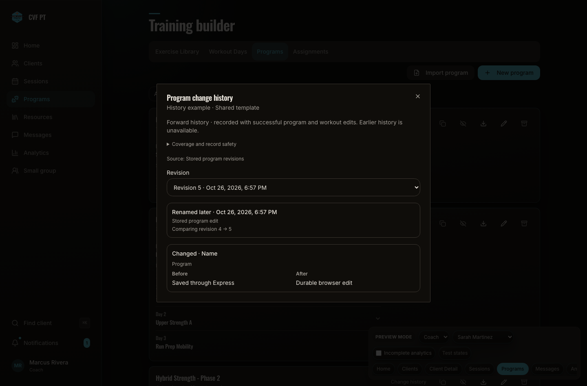

Stored program diff after API restart
Source c336b49. The API process was restarted after a real synthetic program PUT; the existing dialog then read the persisted SQL revisions. The surrounding app shell is fictional preview data, with a test-only history request binding to the actual local Express/PostgreSQL response. No production data or deployment is represented. There was no supported durable history state in the earlier prototype; the original baseline comparison remains separate.
Checks: exact stored before/after values; actor/time; process persistence; no page errors. Image/source manifest.

390px: stored name before/after and immutable author/time.
1440px: same stored revision pair, desktop layout.